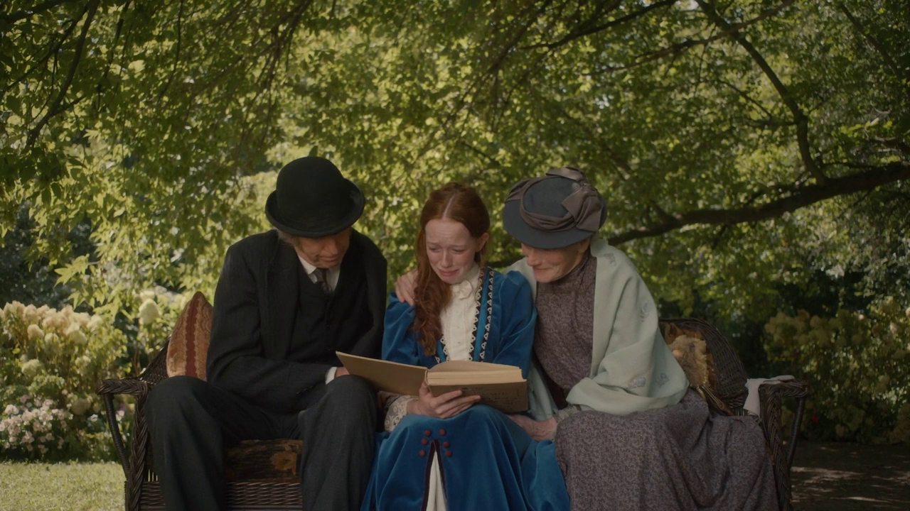
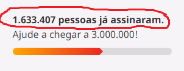

Depois do anúncio da Netflix sobre o cancelamento após a 3ª temporada (2019/2020), fãs se mobilizaram e criaram mutirões nas redes sociais pedindo a continuação da série. Ainda restam esperanças de Anne With An E ser renovada, mesmo apos 3 anos os fãs seguem tentando uma possível renovação.

Os fãs de Anne With an E conseguiram um feito incrivelmente inédito: conseguiram bater o recorde incrível de 1 milhão de assinaturas (meta inicial), em uma petição pedindo a produção da quarta temporada.
O marco aconteceu oito meses após o cancelamento da série e da criação da petição. No entanto, o recorde tem um fato curioso: a petição simplesmente duplicou seu número de assinaturas em apenas dois meses. Já que, no dia 21/05/2019 havia batido a marca de 500 mil assinaturas.
No entanto, nem mesmo 3 anos após, nenhum canal ou plataforma de streaming se manifestou, indicando a renovação. Nem mesmo, o Disney+ e o Amazon Prime Video que haviam manifestado interesse.
Mas nada disso importa, uma vez que a verdadeira detentora dos direitos de Anne não está interessada na quarta temporada (CBC), já que o canal produziu as três temporada de Anne With an E e a Netflix recebeu todos os créditos.
Em uma entrevista, a presidente da CBC, Catherine Tait, já havia dito que, o investimento na atração, não estava dando resultado a curto prazo.
Em suma, a série dava muita audiência na Netflix, mas pouquíssima na CBC.Logo, os custos não pagavam a produção da atração, uma vez que a Netflix só entrava com valores para distribuição.
Mas relatórios apontam que a Netflix tentou comprar a atração do CBC para a produção da quarta temporada, mas o canal teria recusado a oferta. O motivo? A emissora canadense não quer perder os direitos de obra do título para eventuais reprises e, ou, a produção de um reboot no futuro.
Desde o cancelamento, Anne With an E foi tema de várias campanhas de fãs. Mas diante dessa comoção toda, por que Anne With an E não foi resgatada por outra emissora, ou mesmo pela Netflix para uma produção independente?
Isso pode ter algo a ver com uma alegada cláusula contratual da Netflix com a própria CBC. O Deadline confirmou recentemente que “há uma cláusula padrão nos contratos para as séries Netflix de estúdios externos que impede que as séries sejam exibidos em outros lugares por um período significativo de tempo – algo entre dois a três anos, tornando o resgante de Anne praticamente impossível.”.
Além disso, há um outro detalhe: os direitos de produção ainda estão sob o poder da CBC e, com isso, o canal canadense não está disposto a entregá-lo para a Netflix, no intuito da produção de uma quarta temporada. Há rumores de que a CBC planeja fazer uma nova versão de Anne, daqui uns anos, sendo ela a única produtora.
Clique aqui para asinar a petição